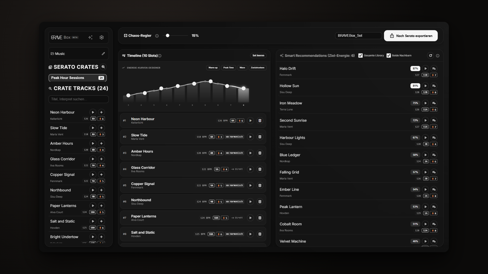
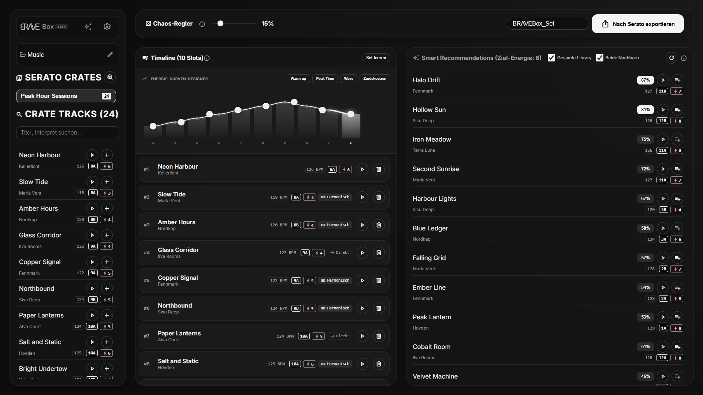

Kennst du das? Der Gig rückt näher, deine Tracks liegen über ein Dutzend Crates verstreut — und in Serato klickst du dich einzeln durch?
Aus Serato-Crates ein spielfertiges Set bauen.
BRAVE Box liest deine bestehenden Serato-Crates ein, du stellst deine Playlist auf einer Timeline zusammen — und exportierst das Ergebnis als .crate-Datei zurück nach Serato DJ Pro. Deine Audiodateien bleiben unangetastet.
Windows · aktuelle Beta aus GitHub-Releases · Beta kostenlos nutzbar
Frische Beta, kleine Community: Wer jetzt testet, dessen Feedback bestimmt, wohin sich BRAVE Box entwickelt.

Kurz zusammengefasst
Serato-nativ
Liest und schreibt das Serato-.crate-Format direkt im _Serato_-Ordner — kein Umweg über andere Tools.
Harmonisch mixen
Camelot- und BPM-Analyse schlägt passende Übergänge vor — inklusive deutscher Tonart-Schreibweisen.
Perlen wiederfinden
„Forgotten Gems“ holt lange nicht gespielte Tracks zurück in deine Sets.
Funktionen der aktuellen Beta
Alles unten steht heute in der App. Was noch nicht drin ist, steht ehrlich dabei.
Crate-Parsing
Bestehende Serato-Crates einlesen — mit Track-Pfaden, Metadaten und Zuordnung, auch bei verschobenen Dateien.
Playlist-Builder
Tracks filtern, Set auf einer Timeline arrangieren, als neue .crate-Datei zurück nach Serato schreiben.
Key-, BPM- & Energie-Matching
Camelot-Kompatibilität, BPM- und Energie-Abgleich mit Empfehlungs-Scoring pro Track: Hohe Energie landet nicht in ruhigen Passagen — Warm-up bleibt Warm-up, Peak bleibt Peak.
3-Track-Journeys
Brücken über drei Tracks finden, wenn zwei Tracks nicht direkt zusammenpassen.
Energiekurve
Dramaturgie per Kurve malen — Presets für Warmup, Peak und Wave, eigene Kurven inklusive.
Vorschau-Player
Tracks direkt in der App probehören, bevor sie ins Set kommen.
Auto-Sorting experimentell
Stapelanalyse mit Kategorie-Filtern und Vorschlags-Crates — aktuell als Experiment gekennzeichnet.
Deutsch & Englisch
Komplette Oberfläche in zwei Sprachen, umschaltbar in den Einstellungen.
Rekordbox-Export
Migration nach Rekordbox 7 und direkter USB-Export sind als Update geplant — in dieser Beta nicht enthalten.
So funktioniert’s
- 1
Laden
BRAVE Box auf deine Serato-Crates zeigen und die Crates auswählen, mit denen du arbeiten willst.
- 2
Kuratieren
Tracks auf einer Timeline arrangieren — mit Matching-Vorschlägen, Energiekurve und Gem-Funden.
- 3
Exportieren
Eine neue
.crate-Datei schreiben und direkt in Serato DJ Pro laden.
Bilder aus der App
Echte Screenshots der Beta — keine Mockups.


Systemanforderungen
| Betriebssystem | Windows 10 / 11 (64-bit). macOS und Linux sind geplant. |
|---|---|
| DJ-Software | Serato DJ Pro mit bestehender Library (_Serato_-Ordner). |
| Updates | Automatisch über GitHub-Releases (Velopack). |
| Datenschutz | Musikdaten bleiben lokal. Telemetrie nur nach ausdrücklicher Einwilligung. |
Hinweis: Das Beta-Setup ist nicht digital signiert. Windows SmartScreen zeigt deshalb beim ersten Start eine Warnung („Unbekannter Herausgeber“) — das ist bei unsignierten Betas normal. Die Signierung steht auf der Roadmap.
Preise
Beta: kostenlos
Die aktuelle Beta ist kostenlos nutzbar. Finale Preise stehen noch nicht fest und werden hier veröffentlicht, sobald sie entschieden sind — inklusive Mehrwertsteuer, ohne versteckte Kosten.
Häufige Fragen
Was bedeutet Energie-Matching?
BRAVE Box bewertet die Energie jedes Tracks. Empfehlungen bevorzugen Tracks, deren Energie zum bisherigen Set-Verlauf passt — gesteuert über deine Energiekurve. So rutscht kein Peak in den Warm-up und kein Ausklang in den Höhepunkt.
Kann BRAVE Box nach Rekordbox migrieren?
Noch nicht. Rekordbox-7-Migration und direkter USB-Export für CDJ/XDJ sind als Update geplant, aber ohne Termin. Die Beta verarbeitet ausschließlich Serato-Crates.
Verändert die App meine Musikdateien?
Nein. BRAVE Box liest Crate-Dateien und Metadaten und schreibt neue .crate-Dateien. Audiodateien werden nicht verändert. Trotzdem gilt wie immer vor einem Gig: Backup deiner Library machen.
Was passiert nach der Beta?
Die Beta ist kostenlos. Finale Preise sind noch nicht entschieden. Updates kommen automatisch über GitHub-Releases.
Läuft BRAVE Box auf Mac oder Linux?
Aktuell nur Windows 10/11. macOS- und Linux-Support sind geplant.
Welche Daten sendet die App?
Standardmäßig keine. Nutzungs- und Fehlerdaten (Telemetrie) werden nur nach deiner ausdrücklichen Einwilligung beim ersten Start übertragen und lassen sich jederzeit in den Einstellungen widerrufen. Details stehen in der Datenschutzerklärung.
Wo bekomme ich Hilfe?
Per E-Mail, über GitHub-Issues oder in der Community auf r/BRAVEBOX — bitte OS, BRAVE-Box-Version und Serato-Version angeben.
Bereit für aufgeräumte Crates?
Lade die kostenlose Windows-Beta und baue dein nächstes Set auf einer Timeline.
Windows · aktuelle Beta aus GitHub-Releases · Beim ersten Start: SmartScreen-Hinweis beachten (siehe Systemanforderungen)